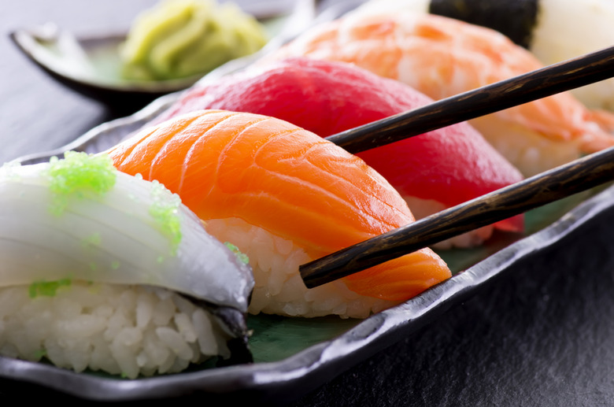

Nigiri Sushi

Delicate and flavorful, Nigiri sushi showcases the pure essence of fresh fish over seasoned rice.
- 1 cup sushi rice
- 2 tbsp rice vinegar
- 1/2 tsp sugar
- 1/4 tsp salt
- Fresh raw fish (salmon, tuna, or shrimp - sliced)
- Wasabi paste
- Soy sauce (to serve)
- Cook rice, mix with vinegar, sugar, and salt
- Let cool
- Wet hands, shape small rice ovals (bite-sized)
- Add a dab of wasabi on each rice oval
- Place a slice of fish over each and press gently
- Serve with soy sauce on the side
Back to Odin-Recipes